The Self-Organizing
Regeneration of Urban Areas
The work views the phenomenon of urban villages as a form of collective wisdom, an instinctive design, and a sculpture. It places this phenomenon within the contexts of “phenomenon,” “art,” “behavior,” and “manifesto,” rethinking it from a new perspective.

Standardized products are mediocre placebos, and elitism and class are the killers of “creative nature.”
A large amount of design is completed through a cycle of trial, failure, and retrying, as we are always waiting for a “happy accident.”
Design Background
Instinctive creation, everyday objects, and spontaneous construction.
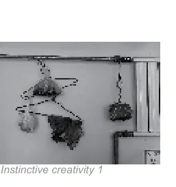
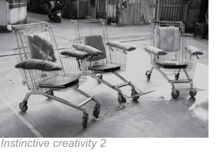
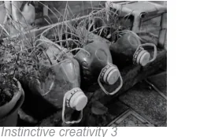
Instinctive Creativity
We may experience such a behavioral pattern every day: using a dishcloth beneath a hot pot; repurposing the sleeve from chopsticks as a rest; cutting old T-shirts into ties; hanging objects from cabinet clips; or using fingers and feet as rough measurement units.
Such behavior has a clear purpose, combines available objects, and quickly completes a task. This is human instinctive creativity.
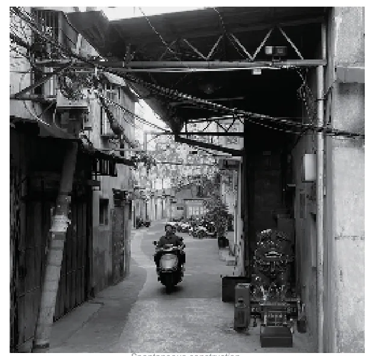
Degraded Creative Instinct
Such small acts of instinctive creativity are gradually being eroded by industrial products and consumerist embellishment. Designers turn improvised solutions into specialized placemats, stones, chopstick rests, and other standardized products.
As a result, everyday opportunities to create personal, intuitive solutions are diminished.
Spontaneous Construction as Instinctive Creativity
Spontaneous construction in urban villages undergoing city renewal can be seen as an instinctive form of human creativity, embodying collective wisdom. These spaces emerge from residents’ needs and resources, solving problems quickly and flexibly.
Yet they are frequently treated as “non-compliant” in urbanization and face demolition or renovation.
Research Process
Field research in Beijing and a classification of spontaneous building units.
Hongsi Village, Beijing
The research focuses on spontaneous construction in Hongsi Village, Xiaohongmen, Chaoyang District, Beijing, near South Fourth Ring Road and Liangshui River. Its location and changing population have contributed to a highly complex urban-village environment.
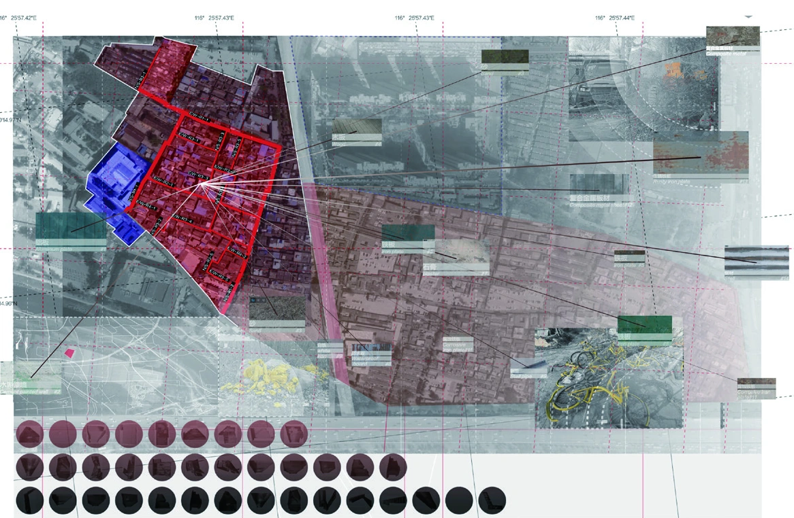
Field Research
Site visits examined spontaneous construction around Hongsi Village and Xiaocun. More than 2,000 units were identified. Image samples of units not attached to original buildings were selected for closer statistical and visual study.
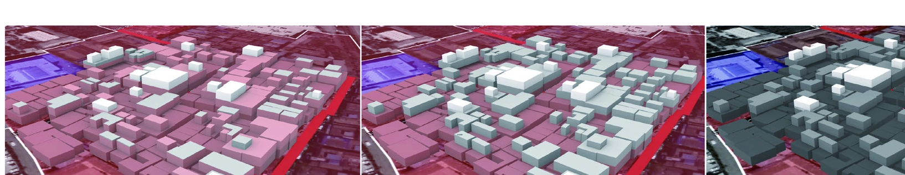
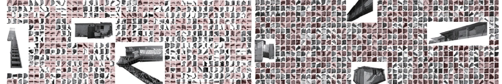
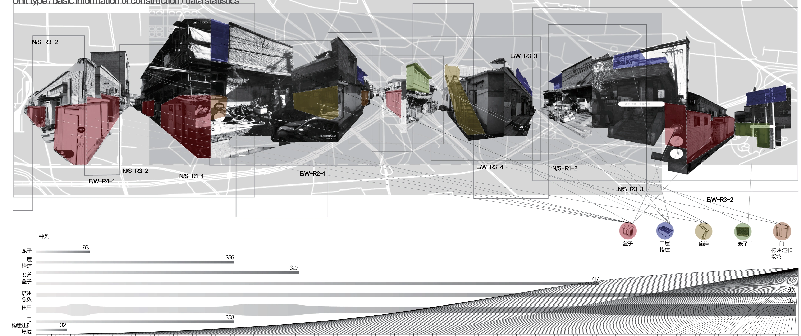
Five Types of Spontaneous Units
The collected structures were classified into five groups. Their combinations and relationships became a rule set for the simulation.
- External Boxes
- Second-story Additions
- Corridors
- Cages (for pigeon keeping)
- Doors + Enclosed Areas and Spaces
Technical and Professional Studies
From field observations to growth-center analysis and generative rules.
Growth Centers and Simulation
On-site surveys and computer simulations defined local growth centers. Based on the surveyed conditions and environments spanning one to three layers, approximately 14,000 potential niches for growth were identified.
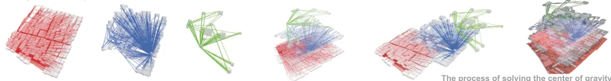
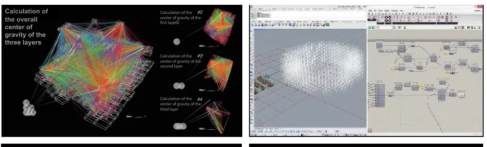
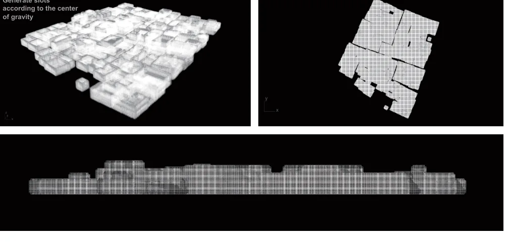
Core Principles of the Algorithm
The core principle is to dynamically reduce the range of possible objects for each construction slot until suitable structures occupy the available spaces. Constraint rules, propagation, and backtracking guide this process.
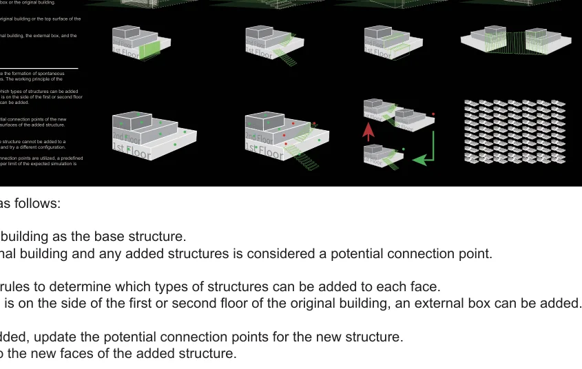
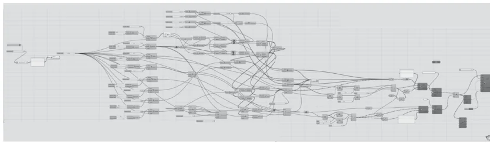
Start with the original building and candidate connection faces.
Choose which structures can connect to each face.
Update the connection points after adding a structure.
Return to a previous configuration if conflicts occur.
Stop when connection points are used or the target is reached.
Outcome Presentation
A generated landscape in which accumulated individual interventions become an architectural sculpture.
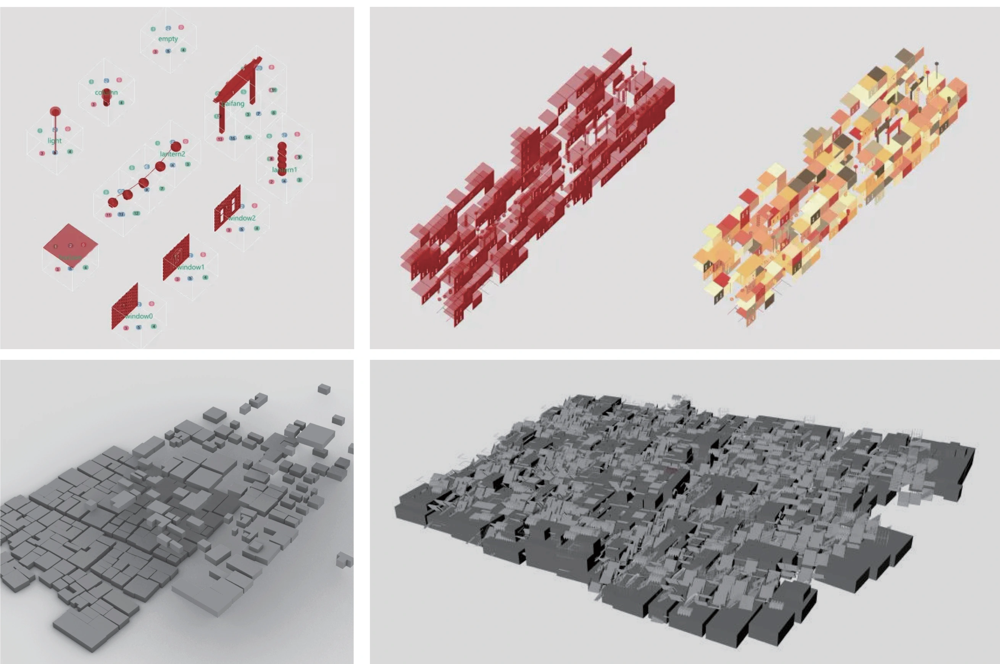
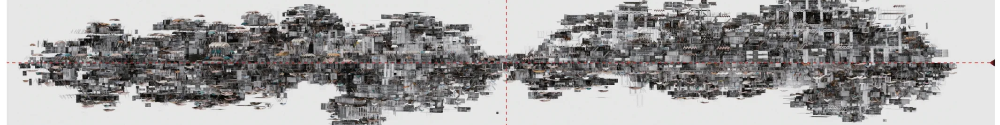
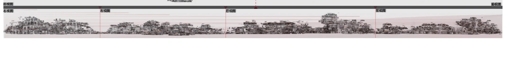